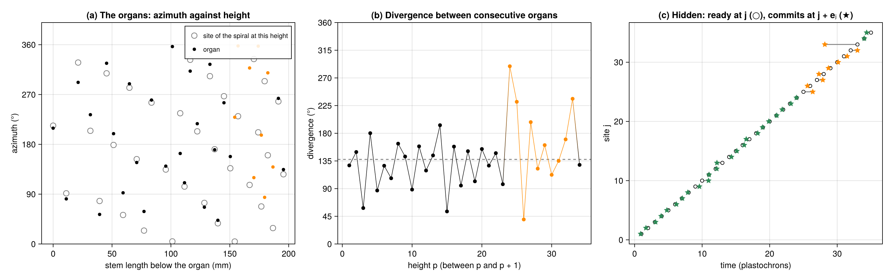

PhyllotaxisFold.jl
Reading the timing of organ initiation from the angles of the organs on a plant stem.
The flowers of an Arabidopsis stem sit on a spiral: each one is rotated by about 137.5°, the golden angle, from the one below. Every so often two neighbours are swapped, the later one sitting below the earlier one. These swaps record when each organ was initiated at the tip of the plant, weeks before we look at the stem. From the angles alone, the package reconstructs the order of initiation, then measures how precise its timing is and how often an organ comes out of its turn.

The example stem of the method pages (simulated). (a) Each organ at its height and azimuth; the grey circles are the ideal spiral. (b) The angles between consecutive organs: mostly the golden angle, with a few characteristic jumps. (c) What produced them, hidden from the observer: each site became ready at a regular pace (circles) and committed after a small random delay (stars). Where two stars cross, the organs are swapped on the stem. This stem is one of the 40 stems of 35 organs of the running example, whose delays have a Gaussian core of sd 0.42 plastochron, plus 6 % of the sites late (mean 1.5 plastochron) and 6 % early (mean 1.0) (§5.6).
Quick start
using PhyllotaxisFold
# angles: one vector of azimuths per stem (radians, bottom to top); x: the stem length (mm) below each organ
m = PhyllotaxisModelAD(angles; torsion = TorsionPrior(mt = 0.0, st = 2.0, νt = 4.0, τt = 1.0), torsion_x = x)
r = fit_map(m)
smp = order_samples(order_posterior(r; nsamples = 200), r.θ.η)
prof = overtaking_profile(smp) # how often an organ is overtaken d places up: the result to report
fit = fit_delay_law(smp, GaussianExpTails(:both)) # a delay law that interprets itA worked analysis runs the whole workflow on a simulated wild type and mutant, with the checks to make and how to read the results.
The orders are reconstructed without any assumption on timing. Hypotheses about timing are then tested on these orders: a hypothesis written as a law of the commitment delay, in a few lines of code, is fitted and compared with the default law or with other laws. See Custom delay laws, and Deriving a law: the fold switch for a law derived from a model of the commitment switch.
The method in five steps
- The problem: what a swap is, and why the order cannot simply be read off the angles.
- Angles given an order: a regular spiral, a little noise, a slow twist of the stem.
- Summing over all orders: $10^{56}$ orders summed exactly in a few thousand operations.
- The propensity model: the law of the order that reconstructs every stem, with its uncertainty.
- Commitment timing: the delay law of initiation, scored exactly on those reconstructed orders.
Then validation on simulated stems, assumptions and limits, notation and references, and the API.
How to read the method pages
They are written for a biologist comfortable with probabilities: each idea in words first, then as an equation. Two labels mark the logic:
- assumption: a choice about the plant or the measurement, which could be wrong;
- result: a mathematical consequence of the assumptions.
Proofs and numerical details sit in folded boxes, which the main text never depends on:
Each page ends with the functions that implement it.